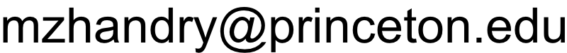

COS 597A - Quantum Cryptography (Fall 2018)
Course Information
| Instructor: | Mark Zhandry |
| Time: | MW 1:30pm - 2:50pm |
| Location: | TBA |
| Office Hours: | By appointment |
| Grading: | Based on homeworks every 2-3 weeks, scribing some lectures, final project |
Course Description
Quantum computers, harnessing the power of quantum physics, are poised to deliver significant and far-reaching
impacts to cryptography. Substantial progress is being made in developing these devices, indicating that
quantum computing may be viable in the next couple decades.
This course will discuss the important role quantum computing will play in cryptography, covering topics such as:
- Quantum attacks on cryptography
- Cryptosystems resilient to quantum attacks
- Protocols using quantum physics, such as quantum key distribution, quantum money, and more
Prerequisites: Basic familiarity with computability and complexity theory, such as that covered in COS 340 (Turing Machines, P vs NP, NP-completeness, etc). Familiarity with
basic notions in cryptography (encryption, authentication, security definitions) will be a plus, but not required.
No prior
knowledge of quantum mechanics or physics is assumed.
Tentative Schedule (subject to change)
| Lecture | Topic | Readings | Scribe Notes |
| 1 - W, 9/12 | Course introduction | | [1] |
| 2 - M, 9/17 | A Mathematical Model for Quantum Mechanics | | [2] |
| 3 - W, 9/19 | Quantum Gates and Quantum Computing | | [3] |
| 4 - M, 9/24 | Quantum Algorithms | | [4] |
| 5 - W, 9/26 | Quantum Fourier Transform, Grover's Algorithm | | [5] |
| 6 - M, 10/1 | Shor's Algorithm | | [6] |
| 7 - W, 10/3 | Shor's Algorithm | | [7] |
| 8 - M, 10/8 | Lattice Cryptography | | [8] |
| 9 - W, 10/10 | Lattice Cryptography | | [9] |
| 10 - M, 10/15 | Dihedral Hidden Subgroup Problem | | [10] |
| 11 - W, 10/17 | Other Post-quantum Cryptosystems | | |
| 12 - M, 10/22 | Quantum Random Oracle Model | [1], [2], [3] | [12] |
| 13 - W, 10/24 | Quantum Rewinding | [4], [5] | [13] |
| M, 10/29 | No Class - Fall recess |
| W, 10/31 |
| 14 - M, 11/5 | More attacks on Post-Quantum Crypto | [6], [7] | [14] |
| 15 - W, 11/7 | No Cloning, Quantum Money | | [15] |
| 16 - M, 11/12 | No Cloning, Quantum Money | | |
| 17 - W, 11/14 | No Cloning, Quantum Money | | [17] |
| 18 - M, 11/19 | Certifiable Randomness | | [18] |
| W, 11/21 | No Class - Thanksgiving |
| 19 - M, 11/26 | Encrypting Quantum States | | |
| 20 - W, 11/28 | Authenticating Quantum States | | [20] |
| 21 - M, 12/3 | Key Recycling | | [21] |
| 22 - W, 12/5 | Quantum Key Distribution | | [22] |
| 23 - M, 12/10 | Student Presentations | | |
| 24 - W, 12/12 | Student Presentations | | |
Homework Assignments
Homework 0: Please sign up for scribing lectures
here. For now, sign up for two lectures.
Homework 1: [HW1] Due October 10
Homework 2: [HW2] Due October 24
Homework 3: [HW3] Due December 5
Instructions for Homeworks: Please type up your solutions (LaTeX preferred). Either email your solutions to  (preferred) or print them out and hand them in during class by the due date.
Templates for Scribing
template.tex
LN1.tex
Final Project
[PR]
Due Dates:
- Project Proposal: Monday, November 12, 11:59pm
- Presentation: In class during the last week of class.
- Project Report: Dean's Date, Tuesday, January 15, 11:59pm.